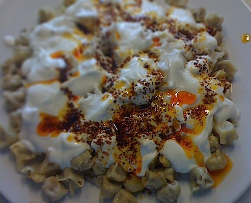

Manti

Description
Manti is a traditional Turkish dish that can take on a variety of shapes and sizes, but the most common and popular is known as “Kayseri Mantisi”, named after the Anatolian town of its origins. Legend has it that if you ask someone from Kayseri how many pieces of manti should fit in one spoonful, they’ll proudly tell you “forty!” A more realistic response for even the most talented manti makers would be five or six…but really, who’s counting?
Ingredients
- 500 g (2 ¾ c) flour, sifted
- 3 eggs
- 5 g (1 tsp) salt
- 150 ml (3/4 c) water
Stuffing:
- 250 g (1/2 lb) ground beef (or ground lamb, or a mixture of the two)
- 1 medium onion, grated and lightly strained
- bunch of finely chopped parsley
- 2.5 g (1 tsp.) nutmeg
- A dash of salt and black pepper
Yogurt Sauce:
- 500 g (2 c) plain yogurt (unstrained)
- 4 cloves of garlic, crushed
- Salt to taste
Red Pepper Infused Butter:
- 75 g (1/3 c) butter
- 5 g (1 ½ tsp) red pepper flakes
To garnish:
- Fresh or dried mint flakes
- Ground sumac
Instructions
- In a large mixing bowl combine the dry ingredients for the dough.
- Create a crater and add the eggs, begin kneading and slowly adding the water to form a soft dough. Allow the dough to rest in the bowl under a damp towel for 30 minutes.
- While waiting for the dough to rest, in a separate mixing bowl, combine the grated onion, ground meat, parsley, nutmeg, salt and pepper. In another bowl, add the crushed garlic and salt to the yogurt to allow the garlic flavor to infuse.
- Once the dough is set, divide into four sections, and work with one section at a time, leaving the remaining sections resting under the towel to prevent drying.
- On a floured work surface, roll out the dough to a thin, rectangle-shape.
- Using a pastry wheel (recommended) or a knife, cut the dough into 3.5cm x 3.5 cm (approximately 1.25 inches) squares.
- Place a chickpea-sized dollop of the meat filling in the center of each square, folding the diagonal corners to meet and make a small purse. Pinch to seal. Place the finished manti on a floured sheet to prevent sticking.
- Melt the butter in a skillet, add the red pepper flakes and cook over low heat until the butter takes on the color of the flakes, taking care not to burn the mixture.
- When all of the manti has been filled, bring a large pot of salted water to a gentle boil and add the manti until cooked—approximately 10-15 minutes. Strain the manti and transfer to a serving plate. Cover the manti with the yogurt sauce, drizzle with the red pepper-infused butter, and sprinkle with mint and/or sumac. Afiyet olsun (“Bon apetit” in Turkish)!